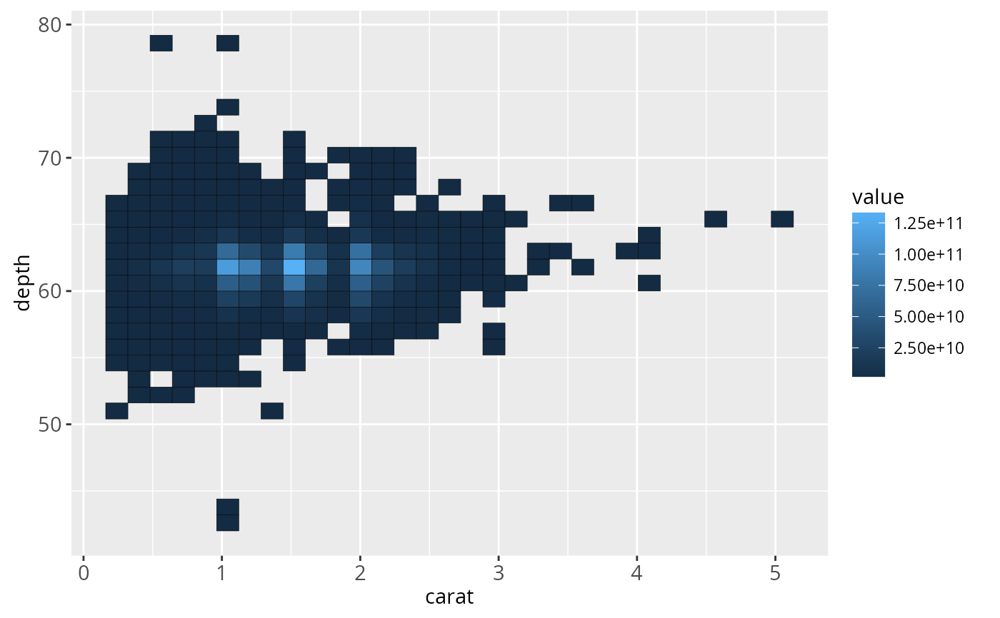
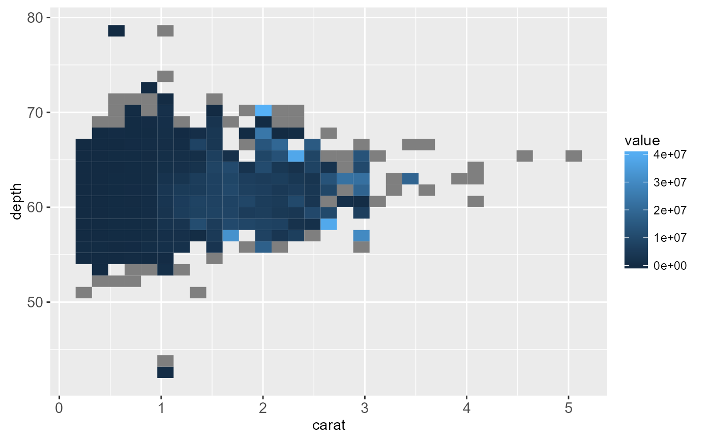
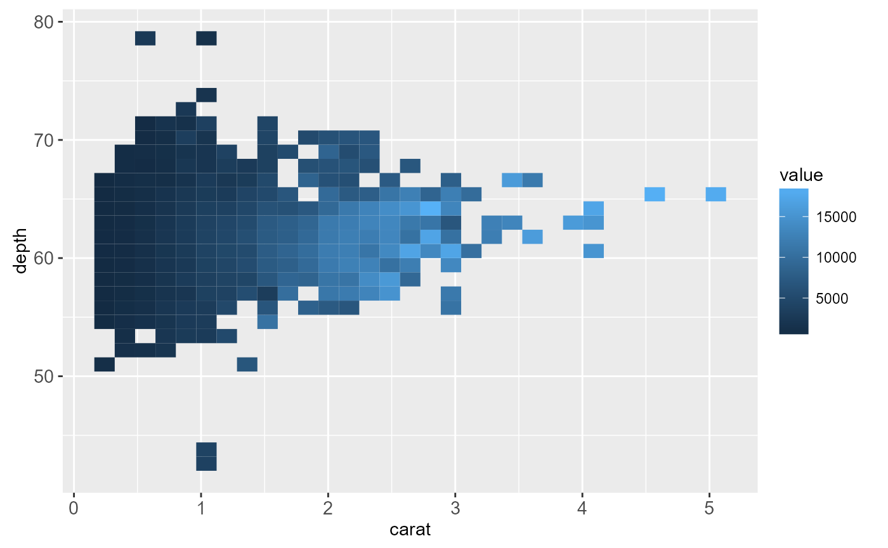
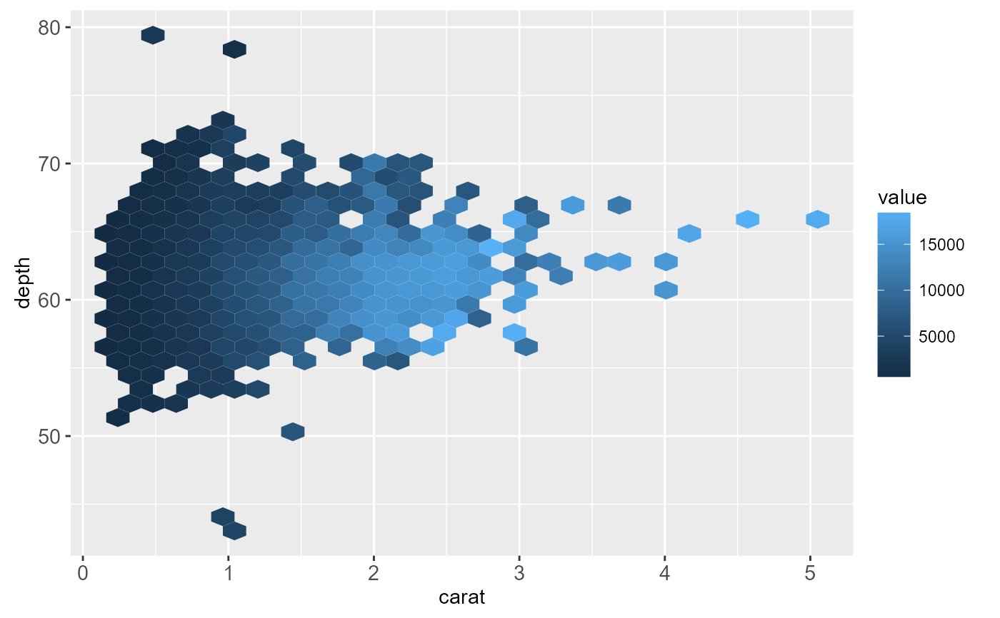

Bin and summarise in 2d (rectangle & hexagons)
Source:R/stat-summary-2d.r, R/stat-summary-hex.r
stat_summary_2d.Rdstat_summary_2d is a 2d variation of stat_summary.
stat_summary_hex is a hexagonal variation of
stat_summary_2d. The data are divided into bins defined
by x and y, and then the values of z in each cell is
are summarised with fun.
Usage
stat_summary_2d(
mapping = NULL,
data = NULL,
geom = "tile",
position = "identity",
...,
bins = 30,
binwidth = NULL,
drop = TRUE,
fun = "mean",
fun.args = list(),
na.rm = FALSE,
show.legend = NA,
inherit.aes = TRUE
)
stat_summary_hex(
mapping = NULL,
data = NULL,
geom = "hex",
position = "identity",
...,
bins = 30,
binwidth = NULL,
drop = TRUE,
fun = "mean",
fun.args = list(),
na.rm = FALSE,
show.legend = NA,
inherit.aes = TRUE
)Arguments
- mapping
Set of aesthetic mappings created by
aesoraes_. If specified andinherit.aes = TRUE(the default), it is combined with the default mapping at the top level of the plot. You must supplymappingif there is no plot mapping.- data
The data to be displayed in this layer. There are three options:
If
NULL, the default, the data is inherited from the plot data as specified in the call toggplot.A
data.frame, or other object, will override the plot data. All objects will be fortified to produce a data frame. Seefortifyfor which variables will be created.A
functionwill be called with a single argument, the plot data. The return value must be adata.frame., and will be used as the layer data.- geom
The geometric object to use display the data
- position
Position adjustment, either as a string, or the result of a call to a position adjustment function.
- ...
other arguments passed on to
layer. These are often aesthetics, used to set an aesthetic to a fixed value, likecolor = "red"orsize = 3. They may also be parameters to the paired geom/stat.- bins
numeric vector giving number of bins in both vertical and horizontal directions. Set to 30 by default.
- binwidth
Numeric vector giving bin width in both vertical and horizontal directions. Overrides
binsif both set.- drop
drop if the output of
funisNA.- fun
function for summary.
- fun.args
A list of extra arguments to pass to
fun- na.rm
If
FALSE(the default), removes missing values with a warning. IfTRUEsilently removes missing values.- show.legend
logical. Should this layer be included in the legends?
NA, the default, includes if any aesthetics are mapped.FALSEnever includes, andTRUEalways includes.- inherit.aes
If
FALSE, overrides the default aesthetics, rather than combining with them. This is most useful for helper functions that define both data and aesthetics and shouldn't inherit behaviour from the default plot specification, e.g.borders.
See also
stat_summary_hex for hexagonal summarization.
stat_bin2d for the binning options.
Examples
d <- ggplot(diamonds, aes(carat, depth, z = price))
d + stat_summary_2d()
# Specifying function
d + stat_summary_2d(fun = function(x) sum(x^2))

d + stat_summary_2d(fun = var)

d + stat_summary_2d(fun = "quantile", fun.args = list(probs = 0.1))

if (requireNamespace("hexbin")) {
d + stat_summary_hex()
}
